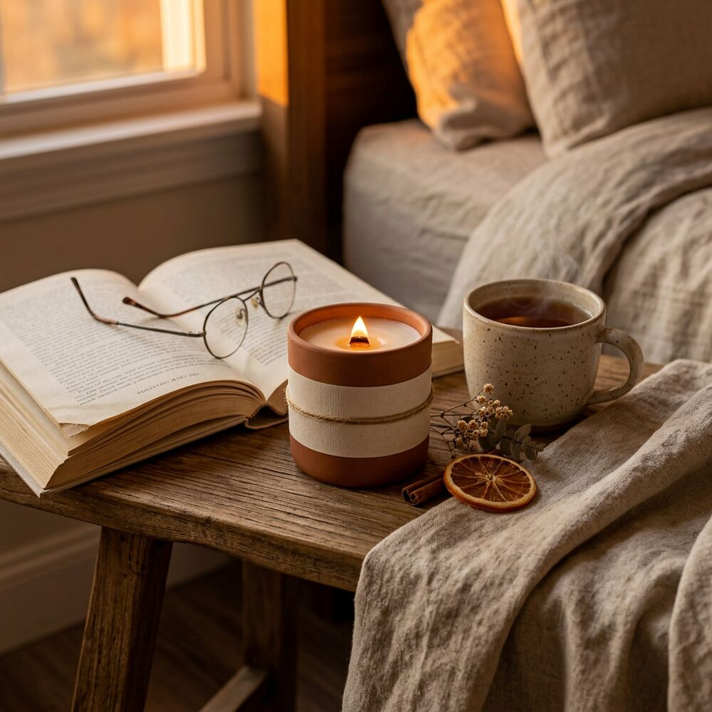
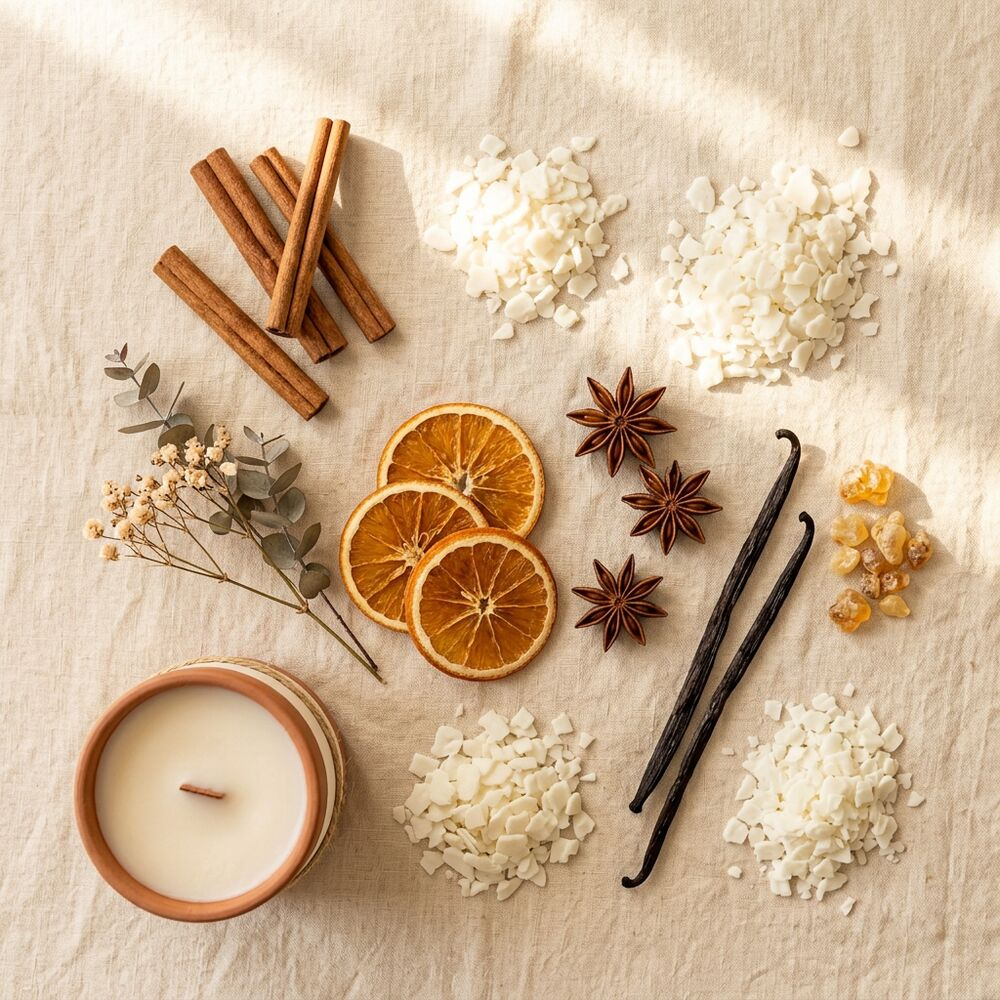

★★★★★
“El crepitar de la mecha es lo mejor. Me la pongo para leer cada noche.”
Cera de soja, mecha de madera que crepita y un vaso de terracota modelado a mano en La Bisbal. Sesenta horas de calma.
Descubrir · desde 24 €
Vertemos cada vela a mano en pequeños lotes. La cera de soja arde más limpia y más lenta que la parafina, y la mecha de madera crepita suavemente, como una chimenea en miniatura.
Cuando se acabe, limpia el vaso con agua caliente y úsalo como maceta, portalápices o para una vela de recambio.

Naranja amarga y bergamota. Lo primero que notas al encenderla: luminoso, fresco.
Canela y anís estrellado. A los veinte minutos la casa huele a cocina de abuela.
Ámbar, vainilla y cedro. Lo que se queda en los cojines cuando ya la has apagado.
“Encender una vela es decirle a la casa que el día ha terminado.”
— El taller de NÓMADADéjala arder unas 2 horas la primera vez, hasta que toda la superficie se funda. Así no hará túnel.
Antes de cada uso, deja la mecha de madera a unos 5 mm. Llama tranquila, sin humo.
Sin soplar: tapa la llama unos segundos. El aroma se queda, el humo no.
“El crepitar de la mecha es lo mejor. Me la pongo para leer cada noche.”
“La regalé por Navidad y ahora me piden la dirección de la tienda todos.”
“Huele muy natural, nada empalagoso. El vaso de terracota es una preciosidad.”
Usamos cera de soja y aceites esenciales sin ftalatos. Aun así, recomendamos ventilar y no dejarla al alcance de animales.
Unas 35 horas la de 180 g y 60 horas la de 320 g, siguiendo el ritual de encendido.
Todas se envían en caja de cartón reciclado con papel de seda. Lista para regalar.
Arde de forma más uniforme, crepita suavemente y reparte mejor el aroma que una mecha de algodón.